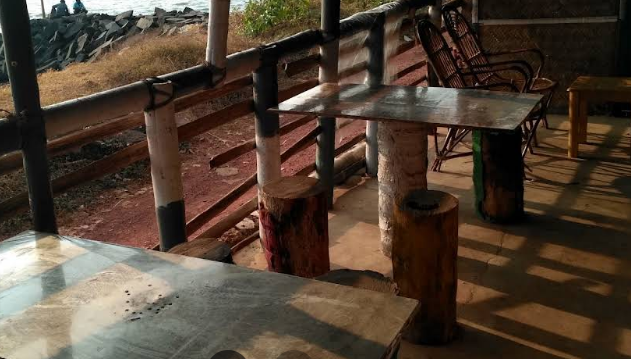
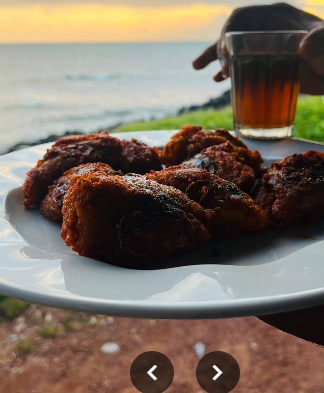
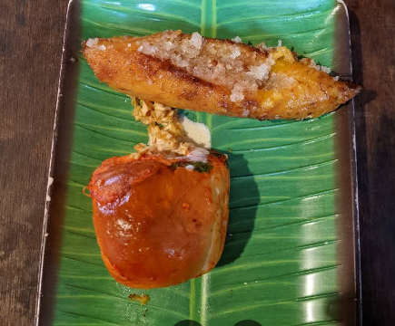
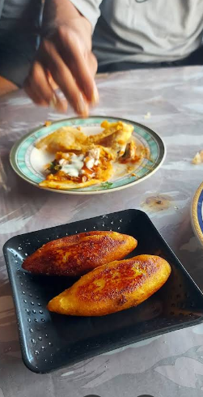
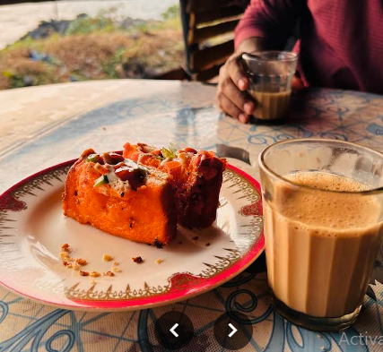

A coastal kind
of evening.
Pull up a seat and take a look around: the old-school café, plates made for sharing, and sea air in every frame.











SALT AIR · OLD-SCHOOL CHARM · MALABAR BITESNEAR OVERBURY’S FOLLY · THALASSERY